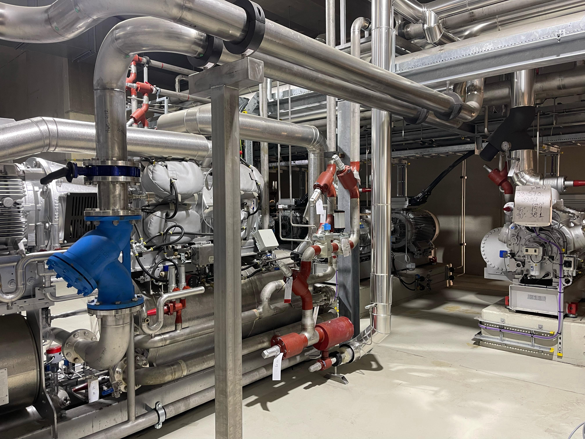
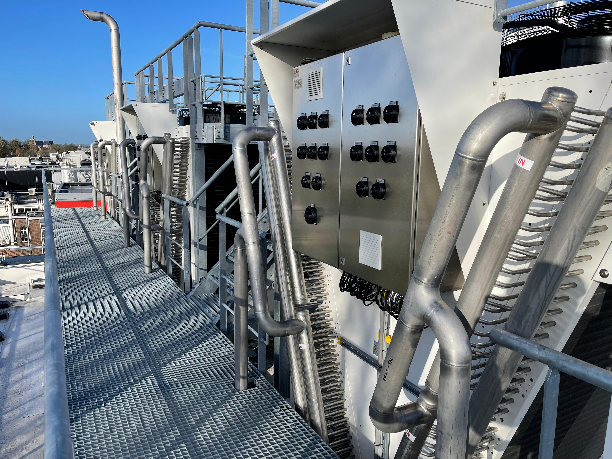

PROJETOS
Projetos industriais executados com rigor técnico e presença internacional
Conheça os tipos de serviço já executados pela CR Welding na Bélgica, Holanda, Alemanha e outros mercados europeus — e a capacidade técnica por trás de cada entrega.
EM CAMPO
Projetos executados em ambiente industrial

Execução técnica e ambiente de campo. Padrão técnico consistente em cada frente.
Padrão técnico consistente em cada frente.
 Organização e disciplina operacional em campo.
Organização e disciplina operacional em campo.



Conheça em detalhe a capacidade de entrega da CR Welding.
Fale com a equipe para conhecer casos reais, indicadores de resultado e referências autorizadas.